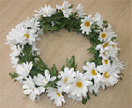
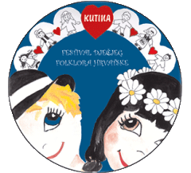

Iza slikovitog naziva IVANČICE nalaze se vrijedni članovi dječjeg folklornog i tamburaškog ansambla jedini takve vrste u Kutini. Osnovan 15.09.1995. godine, njeguje ljepotu dječjeg stvaralaštva kroz pjesmu i igru, a oni nešto stariji pjesmom i plesom
prezentiraju bogatstvo kulturnog nasljeđa Moslavine, Slavonije, Posavine, Međimurja, Podravine diljem Lijepe naše.
U dječji ansambl dolaze djeca već sa 4 godine starosti da u društvu istogodišnjaka ili onih starijih te uz stručna vodstva se igraju, druže, upoznaju sa dječjim moslavačkim tradicijskim igrama, kao i igrama drugih nama susjednih krajeva, te u igri
i veselju uče i prve plesne korake i plesove dječjeg uzrasta.
Ime IVANČICE dolazi od proslave ljetne svetkovine Ivanje (Ivandana, 24.lipnja), zvane kupalo ili kupadlo. U slavenskom svijetu kupadlo je bilo božanstvo zemaljske plodine i žetve. Toga dana su se kupali pojedini ljudi i životinje da bi ih zaobišlo
svako zlo. U današnje vrijeme je sasvim izgubilo svoj nekadašnji smisao i sačuvao se samo u sjećanjima kazivača i ponekih pjevača. Vrijedno je spomenuti spašavanje od zaborava ophoda vezanog uz Ivanje kao i darivanje kojeg su prvi puta izveli 1995.
godine i od tada ne samo u Kutini već i okolnim mjestima postaje tradicionalan. Danas Ivančice broje preko 120-tinjak vrijednih članova podijeljenih po uzrastu u nekoliko skupina.
Osim smotri u Kutini, izdvajamo nastupe u Slavonskom Brodu, na Vinkovačkim jesenima u Vinkovcima, Ivanjski krijesovi u Đakovu, Međunarodnoj smotri u Zagrebu, a od međunarodnog predstavljanja bili smo u Portugalu, Mađarskoj, Rumunjskoj, Sloveniji, Italiji (Sardinija i Sicilija), Makedoniji i Srbiji.
KUD „IVANČICE“ je organizator i nosilac festivala dječjeg folklora Hrvatske. Na festivalu IVANČICE su 4 puta osvajali medalje (dvije zlatne, jednu srebrenu i jednu brončanu).

Festival dječjeg folklora Hrvatske počeo se održavati 2003. godine sa veoma skromnim brojem učesnika, ali iz godine u godinu broj učesnika, a naročito kvaliteta prezentacije tradicijske folklorne građe prilagođene dječjem uzrastu. Festival je uveliko pomogao razvoju dječjeg folklora u Hrvatskoj i pomogao mnogim dječjim grupama i njihovim voditeljima da krenu pravim putem. Koncepcija Festivala je da se program odvija u takmičarskom duhu u dvije kategorije takmičenja.
Prva kategorija su djeca od 3 do 10 godina starosti, koji izvode dječje igre, brojalice, rugalice pjesmice, igre sa mimikom i pjevanjem, te plesove koji su primjenjeni njihovoj dobi. Njihov program može biti bez ili uz glazbenu pratnju, ovisno o tome kako je koreograf zamislio svoju točku. Na Festival se može prijaviti dječja grupa, koja je predložena od strane Stručnih sudova sa regionalnih ili županijskih smotri diljem Hrvatske. Kao gosti festivala sudjeluju i grupe iz inozemstva.
Druga kategorija su djeca od 10 do 14 godina, koji već plešu i pjevaju program koji je primjenjen njihovoj dobi i njihov program je uz glazbenu pratnju osim ako program nije iz krajeva gdje se pleše bez glazbene pratnje.
Program Festivala prati Stručni sud u sastavu, za koji ćemo nastojati da se ne mijenja ni u narednim godinama: Slavica Moslavac, prof. etnologije, Naila Ceribašić dr. etnomuzikologije i Vesan Zorić, prof. etnologije. Nakon završenog programa Stručni sud proglašava tri najuspješnije grupe u obje kategorije takmičenja.
Festival je članica Svjetske folklorne organizacije C.I.O.F.F. i svi podaci o njemu objavljeni su C.I.O.F.F.-ovoj knjižici, koja izlazi svake godine. 2013. godine održan je 10-ti Festival sa najvećim brojem učesnika (1400). Na njemu su nastupile grupe svih dosadašnjih pobjednika, a najviše veseli što sve grupe koje su pobjeđivale na dosadašnjim Festivalima rade bez prestanka, što je najbolja evaluacija ovoga projekta i dokaz da naša tradicijska kultura neće nestati.
KUD „Ivančice je u 2015 godini ostvarilo veoma vrijedne turneje i to sa srednjom grupom u Dimitrovgradu u Bugarskoj. 45 članova veoma vrijednih malih folkloraša i tamburaša u šest dana boravka u Bugarskoj ostvarili su i šest nastupa na festivalu „Kako su plesali naši djedovi“. Uz svoje godtovanje imali su prilike posjetiti i mnoge znamenitosti u Bugarskoj,a najviše ih se dojmilo Crno more.
Starija grupa KUD-a „Ivančice“ bila je na ljetnoj turneji u Grčkoj na otoku Skyjatos. Sa Grčkom su bili svi veoma oduševljeni, kao i sa jednodnevnim posjetom Ateni.Uz puno sunca, mora i lijepih krajolika nije bilo teško odraditi ni nekoliko nastupa, a svojom pojavom oduševili su mnogobrojne turiste u neformalnom programu.
Ove turneje ostvarene su uz financijsku pomoć Ministarstva kulture Republike Hrvatske i Grada Kutine, te pomoći roditelja i članova KUD-a na čemu im se veoma zahvaljujemo sa nadom da će nas podržavati i u slijedećim godinama.